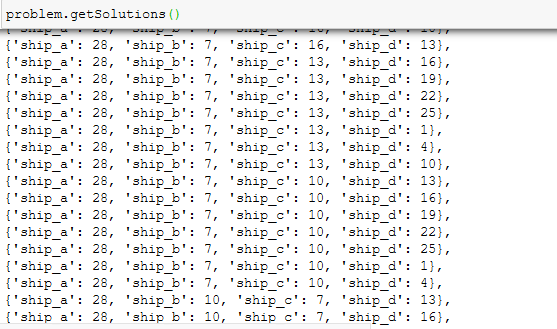

Scheduling Ships¶
In a previous life I worked for a team importing bulk cargo into Australia. We had about 80 shipments a year discharging to a single berth. Working out which shipments to take and when was as complex task which I’ve remained fascinated by. At the time we used a custom SAP module to schedule ships but once the company was sold the scheduler ended up relying on Excel spreadsheets.
In this post, I’ve used the python-constraint module to solve this problem. The actual implementation is straight forward but it’s the framing of the problem which is tricky. We have to correctly identify the variables, the domains and then the constraints. To demonstrate, I first solve a simplistic problem of choosing the discharge order of 4 ships arriving over a 30-day period. The relatively long period means we have ample time to berth all of the ships. The second problem looks at scheduling several ships arriving over limited time windows with not enough berth availability to take all of the shipments.
Simple ordering of ships discharging¶
Let’s suppose we have 4 ships, arriving over a 30-day period. We can only discharge one ship at a time and each ship takes 3 days to discharge. We define the problem as follows:
our variables are ship_a, ship_b, ship_c, ship_d
each ship can berth either on the 1st, 4th, 7th… (this is the domain)
Programmatically this looks like the below, which produces 10,000 possible solutions.
import constraint
from constraint import *
problem = constraint.Problem()
ships = ['ship_a','ship_b','ship_c','ship_d']
for ship in ships:
domain = range(1,30,3)
problem.addVariable(ship, domain)
len(problem.getSolutions())
We then add a constraint that only one ship can berth at a time. Reducing the possible solutions by nearly half to 5,040.
problem.addConstraint(AllDifferentConstraint(), ships)
problem.getSolutions()
You can see below that ship_d does not have the same value as any of the previous ships.
{kind=link}
I also add an arrival constraint. Since ship_a won’t actually arrive before the 5th. This reduces the number of solutions to 4,032.
problem.addConstraint(lambda x: 5 < x, (['ship_a']))
Of the remaining solutions we want to choose the best solution based on an equation we want to minimise or maximise. For this particular problem, we want all of the ships to berth as soon as possible so the equation to minimise is the sum of berthing dates.
min_delay = 999
solution_found = {}
solutions = problem.getSolutions()
for s in solutions:
current_delay = s['ship_a'] + s['ship_b'] + s['ship_c'] + s['ship_d']
if current_delay < min_delay:
min_delay = current_delay
solution_found = s
This gives us solution_found = {‘ship_a’: 10, ‘ship_b’: 7, ‘ship_c’: 4, ‘ship_d’: 1} So ship d would berth on the 1st, ship c on the 4th, ship b on the 7th and ship a on the 10th. This is a rather simplisitc scenario as in reality there are more limits to berthing timing and using a domain as multiples of 3 may unitentionally leave the berth empty will a ship is waiting off the port. However, it does demonstrate the assignment of variables, domains and constraints - both custom and inbuilt.
Ordering of ships with limited berth availability¶
In the second scenario, we cannot discharge all of the ships and must choose both which ships and when to unload. Also, the ships, once arrived in port, have a limited period in which to commence discharge before penalties are applied. Finally, here instead of miminising the arrival dates, we will maximise the value of the shipments.
For this scenario: * choice of 8 shipments * berth availability to start discharging between the 10th and the 19th of the month * each shipment takes 3 days to discharge, * 5-day laycans meaning that contractually there is a 5-day window to commence discharing after arrival
I have a csv file containing ship names, the laycan openings, closings and the values of the shipments to which you can add as many zeros as you wish to get something realistic. Note that I want to start discharging at the opening of the laycan to minimise the chances of running late and therefore incurring penalties.
{kind=link}
I start by extracting the relevant information.
ships = shipping_list.ship_name
laycan_open = shipping_list.laycan_open
laycan_close = shipping_list.laycan_close
last_day = 19
We then create the problem and add the domains for each shipment with the ship able to berth any day from its laycan opening since they all open on or after the 10th until the earlier of its laycan closing or the 19th. Since not every ship will be able to berth, I add to each domain a 0 indicating that the shipment will not be scheduled. Note that here I do not have the domains as multiples of 3 as we may wish to leave the berth empty for 1-2 days. This could happen if, for example, a more valuable shipment arrives the day after a less valuable shipment.
problem = constraint.Problem()
for ship, layo, layc in zip(ships, laycan_open, laycan_close):
domain = list(range(layo, min(layc, last_day), 1))
domain = [0] + domain
problem.addVariable(ship, domain)
len(problem.getSolutions())
This time we have 187,500 possible solutions. With a sample shown below:
{kind=link}
Again we want to remove the duplicate berthing dates. However, we want to keep the duplicate zeros. This means we need to write a custom constraint function. This function reduces the number of solutions by 86% to 27,131.
def unique_constraint(a,b,c,d,e,f,g,h):
solution = np.array([a,b,c,d,e,f,g,h])
solution = solution[np.nonzero(solution)]
if len(np.unique(solution)) == len(solution):
return True
problem.addConstraint(unique_constraint, list(ships))
We also need to add a constraint which allows for the discharge period. We do not want any ship berthing within 3 days of another. Using the below constraint we reduce the number of potential solutions to just 383.
def occupied_constraint(a,b,c,d,e,f,g,h):
solution = np.array([a,b,c,d,e,f,g,h])
solution = solution[np.nonzero(solution)] # ignore 0s
for s in solution:
if ((s in solution + -2) or
(s in solution + -1) or
(s in solution + 1) or
(s in solution + 2)):
return False
return True
problem.addConstraint(occupied_constraint, list(ships))
Finally, we choose the solution which maximises the potential value of the shipments discharged.
solutions = problem.getSolutions()
values = shipping_list.value
max_value = 0
for s in solutions:
current_value = 0
for ship, value in zip(ships, values):
if s[ship]>0:
current_value = current_value + value
if current_value > max_value:
max_value = current_value
solution_found = s
The final solution berths the Jasmine Halo on the 12th, the Diamond Halo on the 15th and the Ruby Halo on the 18th. Since the very fist shipment was only worth a nominal 5, it was not selected to discharge even though this means that the berth sat empty for two days. Of course in the shipping world nothing ever goes to plan so depending on the situation we may choose to have ships arriving with a slight overlap to reduce the risk of berth sitting empty or, if costs of ships waiting at port are extrememly high, we may do the opposite and allow more days between discharging.